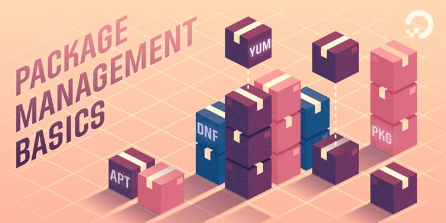

介绍常见 Linux 操作系统的安装包管理工具，主要介绍其使用命令！
包管理系统除了安装软件外，它还提供了工具来更新已经安装的包。包存储库有助于确保你的系统中使用的代码是经过审查的，并且软件的安装版本已经得到了开发人员和包维护人员的认可。

1. dpkg
Ubuntu、Debian
dpkg 命令是 Debian Linux 系统用来安装、创建和管理软件包的实用工具。
- 命令行使用
# dpkg(选项)(参数)
$ dpkg --help
Usage: dpkg [<option> ...] <command>
# 选项
-i：安装软件包
-r：删除软件包
-P：删除软件包的同时删除其配置文件
-L：显示于软件包关联的文件
-l：显示已安装软件包列表
--unpack：解开软件包
-c：显示软件包内文件列表
--confiugre：配置软件包
# 参数
Deb软件包：指定要操作的.deb软件包
- 示例演示说明
# 安装包
$ dpkg -i package.deb
# 删除包
$ dpkg -r package
# 删除包（包括配置文件）
$ dpkg -P package
# 列出与该包关联的文件
$ dpkg -L package
# 显示该包的版本
$ dpkg -l package
# 解开deb包的内容
$ dpkg --unpack package.deb
# 搜索所属的包内容
$ dpkg -S keyword
# 列出当前已安装的包
$ dpkg -l
# 列出deb包的内容
$ dpkg -c package.deb
# 配置包
$ dpkg --configure package
# 列出已安装软件包
$ sudo dpkg-query -l
$ sudo dpkg-query -l | less
$ sudo dpkg-query -l | grep tmux
2. apt
Ubuntu、Debian
apt-get 命令是 Debian Linux 发行版中的 APT 软件包管理工具。所有基于 Debian 的发行都使用这个包管理系统。deb 包可以把一个应用的文件包在一起，大体就如同 Windows 上的安装文件。
- 命令行使用
# apt-get(选项)(参数)
$ apt --help
Usage: apt [options] command
# 选项
-c：指定配置文件
# 参数
管理指令：对APT软件包的管理操作
软件包：指定要操纵的软件包
- 示例演示说明
# 更新所有已安装的软件包
$ apt-get upgrade
# 将系统升级到新版本
$ apt-get dist-upgrade
# 更新
$ apt-get update
# 安装一个新软件包
$ apt-get install packagename
# 卸载一个已安装的软件包（保留配置文件）
$ apt-get remove packagename
# 卸载一个已安装的软件包（删除配置文件）
$ apt-get –purge remove packagename
# 来删除你已经删掉的软件
$ apt-get autoclean apt
# 会把安装的软件的备份也删除
$ apt-get clean
# 列出已安装软件包
$ sudo apt list --installed
$ sudo apt list --installed | less
$ sudo apt list --installed | grep tmux
3. rpm
RHEL、CentOS
rpm 命令是 RPM 软件包的管理工具。rpm 原本是 Red Hat Linux 发行版专门用来管理 Linux 各项套件的程序，由于它遵循 GPL 规则且功能强大方便，因而广受欢迎。逐渐受到其他发行版的采用。RPM 套件管理方式的出现，让 Linux 易于安装，升级，间接提升了 Linux 的适用度。
- 命令行使用
# rpm(选项)(参数)
$ rpm --help
Usage: rpm [OPTION...]
# 选项
-a：查询所有套件
-c：只列出组态配置文件，本参数需配合"-l"参数使用
-d：只列出文本文件，本参数需配合"-l"参数使用
-e<套件档>或--erase<套件档>：删除指定的套件
-f<文件>+：查询拥有指定文件的套件
-h或--hash：套件安装时列出标记
-i：显示套件的相关信息
-i<套件档>或--install<套件档>：安装指定的套件档
-l：显示套件的文件列表
-p<套件档>+：查询指定的RPM套件档
-q：使用询问模式，当遇到任何问题时，rpm指令会先询问用户
-R：显示套件的关联性信息
-s：显示文件状态，本参数需配合"-l"参数使用
-U<套件档>或--upgrade<套件档>：升级指定的套件档
-v：显示指令执行过程
-vv：详细显示指令执行过程，便于排错
# 参数
软件包：指定要操纵的rpm软件包
- 示例演示说明
# 安装
$ rpm -ivh your-package.rpm
# 强制安装
$ rpm --force -ivh your-package.rpm
# 卸载
$ rpm -e proftpd-1.2.8
# 列出所有安装过的包
$ rpm -qa
$ rpm -qa | grep sql
# rpm包中的文件安装到那里
$ rpm -ql ***.rpm
# 一个没有安装过的软件包
$ rpm -qlp ***.rpm
# 一个已经安装过的软件包
$ rpm -ql ***.rpm
# 某个程序是哪个软件包安装
$ rpm -qf `which 程序名` # 返回软件包的全名
$ rpm -qif `which 程序名` # 返回软件包的有关信息
$ rpm -qlf `which 程序名` # 返回软件包的文件列表
4. yum
CentOS6、CentOS7
yum 命令是在 Fedora 和 RedHat 以及 SUSE 中基于 rpm 的软件包管理器，它可以使系统管理人员交互和自动化地更新与管理 RPM 软件包，能够从指定的服务器自动下载 RPM 包并且安装，可以自动处理依赖性关系，并且一次安装所有依赖的软体包，无须繁琐地一次次下载、安装。
- 命令行使用
# yum(选项)(参数)
$ yum --help
Loaded plugins: fastestmirror, langpacks
Usage: yum [options] COMMAND
# 选项
-h：显示帮助信息；
-y：对所有的提问都回答“yes”；
-c：指定配置文件；
-q：安静模式；
-v：详细模式；
-d：设置调试等级（0-10）；
-e：设置错误等级（0-10）；
-R：设置yum处理一个命令的最大等待时间；
-C：完全从缓存中运行，而不去下载或者更新任何头文件。
# 参数
install：安装rpm软件包；
update：更新rpm软件包；
check-update：检查是否有可用的更新rpm软件包；
remove：删除指定的rpm软件包；
list：显示软件包的信息；
search：检查软件包的信息；
info：显示指定的rpm软件包的描述信息和概要信息；
clean：清理yum过期的缓存；
shell：进入yum的shell提示符；
resolvedep：显示rpm软件包的依赖关系；
localinstall：安装本地的rpm软件包；
localupdate：显示本地rpm软件包进行更新；
deplist：显示rpm软件包的所有依赖关系。
- 示例演示说明
# 安装
$ yum install # 全部安装
$ yum install package1 # 安装指定的安装包package1
$ yum groupinsall group1 # 安装程序组group1
# 更新和升级
$ yum update # 全部更新
$ yum update package1 # 更新指定程序包package1
$ yum check-update # 检查可更新的程序
$ yum upgrade package1 # 升级指定程序包package1
$ yum groupupdate group1 # 升级程序组group1
# 查找显示
$ yum list installed | grep mysql
$ yum list installed mysql*
$ yum info package1 # 显示安装包信息package1
$ yum list # 显示所有已经安装和可以安装的程序包
$ yum list package1 # 显示指定程序包安装情况package1
$ yum groupinfo group1 # 显示程序组group1信息
# 删除程序
$ yum remove/erase package1 # 删除程序包package1
$ yum groupremove group1 # 删除程序组group1
$ yum deplist package1 # 查看程序package1依赖情况
# 清除缓存
$ yum clean packages # 清除缓存目录下的软件包
$ yum clean headers # 清除缓存目录下的 headers
$ yum clean oldheaders # 清除缓存目录下旧的 headers
5. dnf
RHEL8、CentOS8
DNF 使用 libsolv 进行依赖解析，由 SUSE 开发和维护，旨在提高性能。Yum 主要是用 Python 编写的，它有自己的应对依赖解析的方法。它的 API 没有完整的文档，它的扩展系统只允许 Python 插件。Yum 是 RPM 的前端工具，它管理依赖关系和资源库，然后使用 RPM 来安装、下载和删除包。
由于 Yum 中许多长期存在的问题仍未得到解决，因此 Yum 包管理器已被 DNF 包管理器取代。这些问题包括性能差、内存占用过多、依赖解析速度变慢等。两个管理包工具的更多区别可以查看，What is the difference between DNF and YUM? 进行阅读。
- 安装 DNF 包管理器
# 依赖
$ yum install -y epel-release
# 安装
$ yum install -y dnf
# 检查
$ dnf –version
- 常用命令介绍
# 安装软件包
$ dnf install nano
# 升级软件包
$ dnf update systemd
# 升级所有系统软件包
$ dnf update
$ dnf upgrade
# 检查系统软件包的更新
$ dnf check-update
# 删除软件包
$ dnf remove nano
$ dnf erase nano
# 删除无用孤立的软件包
$ dnf autoremove
# 删除缓存的无用软件包
$ dnf clean all
# 查看系统中可用的DNF软件库
$ dnf repolist
# 查看系统中可用和不可用的所有的DNF软件库
$ dnf repolist all
# 列出所有RPM包
$ dnf list
# 列出所有安装了的RPM包
$ dnf list installed
# 列出所有可供安装的RPM包
$ dnf list available
# 搜索软件库中的RPM包
$ dnf search nano
# 查找某一文件的提供者
$ dnf provides /bin/bash
# 查看软件包详情
$ dnf info nano
# 查看所有的软件包组
$ dnf grouplist
# 安装一个软件包组
$ dnf groupinstall 'Educational Software'
# 升级一个软件包组中的软件包
$ dnf groupupdate 'Educational Software'
# 删除一个软件包组
$ dnf groupremove 'Educational Software'
# 重新安装特定软件包
$ dnf reinstall nano
# 回滚某个特定软件的版本
$ dnf downgrade acpid
# 查看DNF命令的执行历史
$ dnf history
# 查看所有的DNF命令及其用途
$ dnf help
# 获取有关某条命令的使用帮助
$ dnf help clean